기계설계산업기사 (2012-05-20 기출문제)
1과목: 기계가공법 및 안전관리
1. 밀링 머신의 주축베어링 윤활방법으로 적합하지 않은 것은?
- 그리스 윤활
- 오일 미스트 윤활
- 강제식 윤활
- 패드 윤활
(정답률: 51%)

2. 주철을 드릴로 가공할 때 드릴 날끝의 여유각은 몇도(°)가 적합한가?
- 10° 이하
- 12° ~ 15°
- 20° ~ 32°
- 32° 이상
(정답률: 74%)
3. 브로칭(broaching)에 관한 설명 중 틀린 것은?
- 제작과 설계에 시간이 소요되며 공구의 값이 고가이다.
- 각 제품에 따라 브로치의 제작이 불편하다.
- 키 홈, 스플라인 홈 등을 가공하는데 사용한다.
- 브로치 압입방법에는 나사식, 기어식, 공압식이 있다.
(정답률: 55%)
4. 절삭공구인선의 파손원인 중 절삭공구의 측면과 피삭재의 가공면과의 마찰에 의하여 발생하는 것은?
- 크레이터 마모
- 플랭크 마모
- 치핑
- 백래시
(정답률: 58%)
5. 마이크로미터의 스핀들 나사의 피치가 0.5mm이고 딤블의 원주눈금이 50등분 되어 있다면 최소 측정값은?
- 2μm
- 5μm
- 10μm
- 15μm
(정답률: 73%)
6. 연삭숫돌의 표시에서 WA 60 K m V 1호 2⑤×19×15.88로 명기되어 있다. K는 무엇을 나타내는 부호인가?
- 입자
- 결합재
- 결합도
- 입도
(정답률: 70%)
7. 선반에서 지름 50mm의 재료를 절삭속도 60m/min, 이송 0.2mm/rev, 길이 30mm로 1회 가공할 때 필요한 시간은?
- 약 10초
- 약 18초
- 약 23초
- 약 39초
(정답률: 42%)
8. 분할대를 이용하여 원주를 18등분하고자 한다. 신시내티형(Cincinnati type) 54구멍 분할판을 사용하여 단식분할 하려면 어떻게 하는가?
- 2회전하고, 2구멍씩 회전시킨다.
- 2회전하고, 4구멍씩 회전시킨다.
- 2회전하고, 8구멍씩 회전시킨다.
- 2회전하고, 12구멍씩 회전시킨다.
(정답률: 39%)
9. 다음 중 가공물을 절삭 할 때 발생되는 칩의 형태에 미치는 영향이 가장 적은 것은?
- 절삭깊이
- 공작물이 재질
- 절삭공구의 형상
- 윤활유
(정답률: 70%)
10. 다음 중 각도측정기가 아닌 것은?
- 사인바
- 옵티컬플랫
- 오토 콜리메이터
- 탄젠트바
(정답률: 68%)
11. 래핑(lapping)작업에 관한 사항 중 틀린 것은?
- 경질 합금을 래핑할 때는 다이아몬드로 해서는 안된다.
- 래핑유(lap-oil)로는 석유를 사용해서는 안된다.
- 강철을 래핑할 때는 주철이 널리 사용된다.
- 랩 재료는 반드시 공작물보다 연질의 것을 사용한다.
(정답률: 49%)
12. 퓨즈가 끊어져서 다시 끼웠을 때 또다시 끊어졌을 경우의 조치사항으로 가장 적합한 것은?
- 다시 한 번 끼워본다.
- 조금 더 용량이 큰 퓨즈를 끼운다.
- 합선 여부를 검사한다.
- 굵은 동선으로 바꾸어 끼운다.
(정답률: 84%)
13. 다음 연삭가공 중 강성이 크고, 강력한 연삭기가 개발됨으로 한번에 연삭 깊이를 크게 하여 가공능률을 향상시킨 것은?
- 자기 연삭
- 성형 연삭
- 그립 피드 연삭
- 경면 연삭
(정답률: 71%)
14. NC기계의 움직임을 전기적인 신호로 표시하는 회전 피드백 장치는 무엇인가?
- 리졸버(resolver)
- 서보 모터(servo moter)
- 컨트롤러(controller)
- 지령 테이프(NC tape)
(정답률: 71%)
15. 마이크로미터의 사용시 일반적인 주의사항이 아닌 것은?
- 측정시 래칫 스톱은 1회전 반 또는 2회전 돌려 측정력을 가한다.
- 눈금을 읽을 때는 기선의 수직위치에서 읽는다.
- 사용 후에는 각 부분을 깨끗이 닦아 진동이 없고 직사광선을 잘 받는 곳에 보관하여야 한다.
- 대형 외측마이크로미터는 실제로 측정하는 자세로 0점 조정을 한다.
(정답률: 75%)
16. 공작기계작업에서 절삭제의 역할에 대한 설명으로 옳지 않은 것은?
- 절삭공구와 칩 사이의 마찰을 감소시킨다.
- 절삭시 열을 감소시켜 공구수명을 연장시킨다.
- 구성인선의 발생을 촉진시킨다.
- 가공면의 표면거칠기를 향상시킨다.
(정답률: 79%)
17. 드릴링머신으로 구멍 뚫기 작업을 할 때 주의해야 할 사항이다. 틀린 것은?
- 드릴은 흔들리지 않게 정확하게 고정해야 한다.
- 장갑을 끼고 작업을 하지 않는다.
- 구멍 뚫기가 끝날 무렵은 이송을 천천히 한다.
- 드릴이나 드릴 소켓 등을 뽑을 때에는 해머 등으로 두들겨 뽑는다.
(정답률: 86%)
18. 다음 중 수평밀링머신의 긴 아버(long arbor)를 사용하는 절삭공구가 아닌 것은?
- 플레인 커터
- T홈 커터
- 앵귤러 커터
- 사이드 밀링커터
(정답률: 56%)
19. KSB에 규정된 표면거칠기 표시방법이 아닌 것은?
- 산술평균 거칠기(Ra)
- 최대높이(Ry)
- 10점 평균 거칠기(Rz)
- 제곱 평균 거칠기(Ra)
(정답률: 82%)
20. 표준 맨드릴(mandrel)의 테이퍼 값으로 적합한 것은?
- 1/50~1/100 정도
- 1/100~1/1000 정도
- 1/200~1/400 정도
- 1/10~1/20 정도
(정답률: 68%)
2과목: 기계제도
21. 구름 베어링의 안지름 번호와 안지름 치수가 잘못 연결된 것은?
- 안지름 번호 : 00 → 안지름 : 10mm
- 안지름 번호 : 03 → 안지름 : 17mm
- 안지름 번호 : 07 → 안지름 : 35mm
- 안지름 번호 : /22 → 안지름 : 110mm
(정답률: 74%)
22. 가공 모양의 기호에 대한 설명으로 잘못된 것은?
- = : 가공에 의한 컷의 줄무늬 방향이 기호를 기입한 그림의 투영한 면에 평행
- X : 가공에 의한 컷의 줄무늬 방향이 기호를 기입한 그림의 투영면에 비스듬하게 2방향으로 교차
- M : 가공에 의한 컷의 줄무늬가 여러 방향으로 교차 또는 무방향
- R : 가공에 의한 컷의 줄무늬가 기호를 기입한 면의 중심에 대하여 거의 동심원 모양
(정답률: 70%)
23. 다음 입체도를 제3각법 정투상도로 옳게 나타낸 것은?
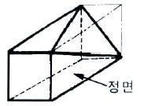
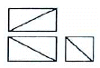
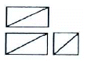
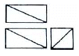
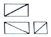
(정답률: 72%)
24. 다음과 같은 끼워맞춤의 경우 최대 틈새는 얼마인가?
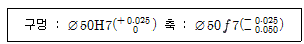
- 0,025
- 0.⑤0
- 0.075
- 0.100
(정답률: 78%)
25. 가공 방법의 약호 중에서 다듬질 가공인 스크레이핑 가공의 약호인 것은?
- FS
- FSU
- CS
- FSD
(정답률: 79%)
26. 구멍에 끼워 맞추기 위한 구멍, 볼트, 리벳의 기호 표시에서 구멍 가까운 면에 카운터싱크가 있고, 현장에서 드릴 가공 및 맞춤에 해당하는 것은?
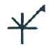
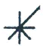
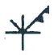
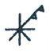
(정답률: 62%)
27. 핸들이나 바퀴 등의 암 및 리브, 훅, 축, 구조물의 부재 등의 절단한 곳의 전, 후를 끊어서 그 사이에 회전 도시 단면도를 그릴 때 단면 외형을 나타내는 선은 어떤 선으로 나타내야 하는가?
- 가는 실선
- 굵은 1점 쇄선
- 굵은 실선
- 가는 2점 쇄선
(정답률: 59%)
28. 그림과 같이 기입된 KS 용접기호의 해석으로 옳은 것은?
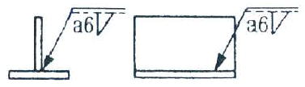
- 화살표 쪽 필릿 용접 목 두께가 6mm
- 화살표 반대쪽 필릿 용접 목 두께가 6mm
- 화살표 쪽 필릿 용접 목 길이가 6mm
- 화살표 반대쪽 필릿 용접 목 길이가 6mm
(정답률: 72%)
29. 그림과 같은 용접기호의 명칭으로 맞는 것은?
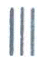
- 개선 각이 급격한 V 형 맞대기 용접
- 개선 각이 급격한 일면 개선형 맞대기 용접
- 가장자리(edge) 용접
- 표면 육성
(정답률: 68%)
30. KS 재료 기호 중 용접 구조용 압연 강재 기호는?
- SM400A
- SPHD
- SS400
- SPP
(정답률: 39%)
31. 그림과 같은 입체도를 제3각 정투상법으로 정면 도, 평면도, 좌측면도를 나타낼 때 가장 적절한 것은?
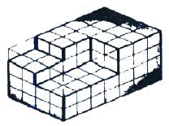
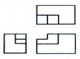
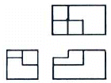
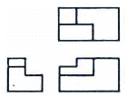
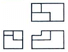
(정답률: 82%)
32. 축을 가공하기 위한 센터구멍의 도시 방법 중 그림과 같은 도시 기호의 의미는?
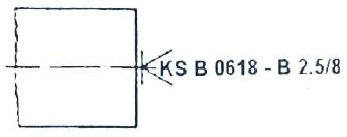
- 다듬질 부분에서 반드시 센터구멍을 남겨둔다.
- 다듬질 부분에서 센터구멍이 남아 있어도 좋다.
- 다듬질 부분에서 센터구멍이 남아 있어서는 안된다.
- 센터의 규격에 따라 다르다.
(정답률: 70%)
33. 그림의 입체도를 화살표 방향에서 보았을 때 적합한 투상도는?
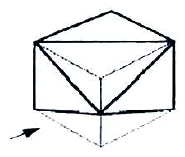
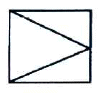
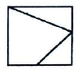
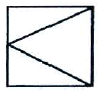
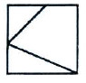
(정답률: 63%)
34. 끼워맞춤치수 ø30 H7/g6 는 어떤 끼워맞춤인가?
- 중간 끼워맞춤
- 헐거운 끼워맞춤
- 억지 끼워맞춤
- 중간 억지 끼워맞춤
(정답률: 80%)
35. 그림과 같이 상호 관련된 4개의 구멍의 치수 및 위치 허용 공차에 대한 설명으로 틀린 것은?
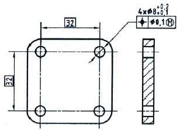
- 각 형태의 실제 부분 크기는 크기에 대한 허용공차 0.1의 범위에 속해야 하며, 각 형태는 ø8.1에서 ø8.2 사이에서 변할 수 있다.
- 모든 허용공차가 적용된 형태는 실질 조건 경계, 즉 ø8(=ø8.1-0.1)의 완전한 형태의 내접 원주를 지켜야 한다.
- ø8.1인 최대 재료 크기일 경우 각 형태의 축은 ø0.1의 위치허용공차 범위에 속해야 한다.
- ø8.2인 최소 재료 크기일 경우 각 형태의 축은 ø0.1인 허용 공차 영역 내에서 변할 수 있다.
(정답률: 38%)
36. 스케치도를 그려야 하는 경우와 가장 관계가 없는 것은?
- 도면이 없는 부품과 같은 것을 만들려고 할 경우
- 도면이 없는 부품을 참고로 하려고 할 경우
- 도면이 없는 부품의 마멸 또는 파손된 부분을 수리 하여 제작할 경우
- 도면을 좀 더 깨끗하게 보완할 필요가 있는 경우
(정답률: 76%)
37. 그림과 같이 제3각법으로 도시되는 물체의 형태는?
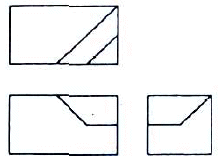
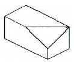
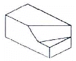
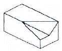
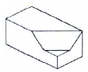
(정답률: 85%)
38. 그림과 같은 I 형강의 표시방법으로 올바르게 된 것은?(단, L은 형강의 길이이다.)
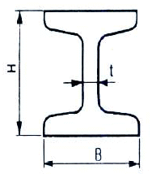
- I H × B × t × L
- I H × B × t - L
- I B × H × t × L
- I B × H × t - L
(정답률: 79%)
39. 재료기호 KS D 3503 SS 400에 대한 설명 중 맞는 항을 모두 고른 것은?
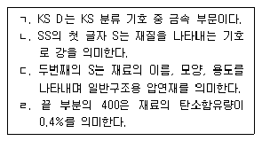
- ㄱ, ㄴ
- ㄱ, ㄹ
- ㄱ, ㄴ, ㄷ
- ㄴ, ㄷ, ㄹ
(정답률: 74%)
40. 그림과 같은 기하공차의 해석으로 가장 적합한 것은?
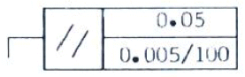
- 지정 길이 100mm에 대하여 0.0⑤mm, 전체길이에 대해 0.⑤mm의 평행도
- 지정 길이 100mm에 대하여 0.⑤mm, 전체길이에 대해 0.0⑤mm의 평행도
- 지정 길이 100mm에 대하여 0.0⑤mm, 전체길이에 대해 0.⑤mm의 대칭도
- 지정 길이 100mm에 대하여 0.⑤mm, 전체길이에 대해 0.0⑤mm의 대칭도
(정답률: 76%)
3과목: 기계설계 및 기계재료
41. 복합재료 중 FRP는 무엇을 말하는가?
- 섬유 강화 목재
- 섬유 강화 플라스틱
- 섬유 강화 금속
- 섬유 강화 세라믹
(정답률: 85%)
42. 다음 금속 중 가공성과 전도성이 우수하여 방전용 전극 재료로 가장 많이 사용되고 있는 재료는?
- 구리(Cu)
- 알루미늄(Al)
- 아연(Zn)
- 마그네슘(Mg)
(정답률: 75%)
43. 아연에 대한 설명 중 틀린 것은?
- 조밀육방격자형이며 회백색의 연한 금속이다.
- 비중이 7.1, 융점이 420℃ 이다.
- 산, 알칼리, 해수 등에 부식되지 않는다.
- 철판, 철선의 도금에 사용된다.
(정답률: 65%)
44. 저온뜨임의 목적이 아닌 것은?
- 솔바이트 조직 생성
- 내마모성의 향상
- 담금질 응력 제거
- 치수의 경년변화 방지
(정답률: 52%)
45. 다음 알루미늄 합금 중 내열성이 있는 주물로 공랭 실린더 헤드 및 피스톤 등에 널리 사용되는 것은?
- Y합금
- 라우탈
- 하이드로날륨
- 고력Al합금
(정답률: 72%)
46. 다음 중 강의 적열취성의 주 원인이 되는 원소는?
- Mn
- Si
- S
- P
(정답률: 56%)
47. 다음 중 선팽창계수가 큰 순서로 올바르게 나열된 것은?
- 알루미늄 > 구리 > 철 > 크롬
- 철 > 크롬 > 구리 > 알루미늄
- 크롬 > 알루미늄 > 철 > 구리
- 구리 > 철 > 크롬 > 구리
(정답률: 72%)
48. 다음의 설명 중 옳지 않는 것은?
- A1변태는 강에서 일어나는 변태이다.
- 펄라이트는 순철의 일종이다.
- 오스테나이트의 최대 탄소고용량은 1130℃에서 약 2.0%이다.
- 시멘타이트는 철과 탄소의 화합물이다.
(정답률: 45%)
49. 다음 중 소결합금으로 된 공구강은?
- 초경합금
- 스프링강
- 기계구조용강
- 탄소공구강
(정답률: 69%)
50. 다음 철광석 중에서 철의 성분이 가장 많이 포함된 것은?
- 자철광
- 망간광
- 갈철광
- 능철광
(정답률: 74%)
51. 관이음에서 방향을 바꾸는 경우 사용하는 관 이음쇠는?
- 소켓
- 니플
- 엘보
- 유니언
(정답률: 69%)
52. 잇수 30개 압력각 30°의 스퍼기어에서 언더컷이 생기지 않도록 전위기어로 제작하려 한다. 언더컷이 발생하지 않도록 하기 위한 최소이론 전위량은 몇 mm인가? (단, 모듈 m = 6이다.)
- -10mm
- -12.5mm
- -14mm
- -16.5mm
(정답률: 23%)
53. 축의 재료와 키(key)의 재료가 같은 경우, 축의 지름이 50mm에 폭 10mm의 묻힘 키를 설치했을 때, 전단으로 키가 파손되지 않으려면 키의 길이는 약 몇mm이상이어야 하는가? (단, 키에서 발생하는 최대전단응력과 축에 발생하는 최대전단응력은 같다고 한다.)
- 55
- 73
- 99
- 126
(정답률: 28%)
54. 일반적으로 두 축이 같은 평면 내에서 일정한 각도로 교차하는 경우에 운동을 전달하는 축이음은?
- 맞물림 클러치
- 플렉시블 커플링
- 플랜지 커플링
- 유니버설 조인트
(정답률: 50%)
55. 리드각 α, 마찰계수 μ=tanρ 인 나사의 자립(自立) 조건을 만족하는 것은? (단, ρ는 마찰각을 의미한다.)
- α < 2ρ
- 2α < ρ
- α < ρ
- α > ρ
(정답률: 61%)
56. 브레이크 슈의 길이 및 폭이 각각 75mm, 28mm이고, 브레이크 슈를 미는 힘이 343N일 때 브레이크 압력은 약 몇 MPa인가?
- 0.076
- 0.124
- 0.163
- 0.215
(정답률: 50%)
57. 12m/s의 속도로 35.3kW의 동력을 전달하는 평벨트의 이완측 장력은 약 몇 N 인가? (단, 긴장측의 장력은 이완측 장력의 3배이고, 원심력은 무시한다.)
- 980N
- 1471N
- 1961N
- 2942N
(정답률: 40%)
58. 다음 설명 중 마찰차를 적용하기 힘든 경우는?
- 정확한 속도비가 필요할 경우
- 두 회전축이 교차하면서 회전력을 전달할 경우
- 전달력이 그렇게 크지 않은 경우
- 무단 변속을 시키는 경우
(정답률: 49%)
59. 볼 베어링의 기본부하용량 C, 베어링 이론하중 Pth, 회전수가 N 일 때 베어링의 수명시간 Lh는? (단, 하중계수는 fw , 속도계수(speed factor)는 fn , 수명계수(life factor)는 fh 이다.)
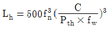
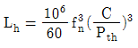
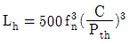
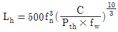
(정답률: 45%)
60. 높이 50mm의 사각봉이 압축하중을 받아 0.004의 변형률이 생겼다고 하면 이 봉의 높이는 얼마로 되었는가?
- 49.8mm
- 49.9mm
- 49.98mm
- 49.99mm
(정답률: 43%)
4과목: 컴퓨터응용설계
61. 다음 중 서피스 모델(surface model)의 일반적인 특징으로 보기 어려운 것은?
- NC 가공 정보를 얻기가 용이하다.
- 복잡한 형상 표현이 가능하다.
- 유한요소법 적용을 위한 요소 분할이 쉽다.
- 은선 제거가 가능하다.
(정답률: 61%)
62. 일반적인 CAD 시스템에서 2차원 평면에서 정해진 하나의 원을 그리는 방법이 아닌 것은?
- 원주상의 세 점을 알 경우
- 원의 반지름과 중심점을 알 경우
- 원주상의 한 점과 원의 반지름을 알 경우
- 원의 반지름과 2개의 접선을 알 경우
(정답률: 61%)
63. B-spline 곡선의 특징을 설명한 것으로 틀린 것은?
- 하나의 꼭지점을 움직여도 이웃하는 단위 곡선과의 연속성이 보장된다.
- 1개의 정점 변화는 곡선 전체에 영향을 준다.
- 다각형에 따른 형상 예측이 가능하다.
- 곡선상의 점 몇 개를 알고 있으면 B-spline 곡선을 쉽게알 수 있다.
(정답률: 55%)
64. 래스터 방식의 그래픽 모니터에서 수직, 수평선을제외한 선분들이 계단모양으로 표시되는 현상을 무엇이라고 하나?
- 플리커
- 언더컷
- 앨리어싱
- 클리핑
(정답률: 55%)
65. 빛을 편광시키는 특성을 가진 유기 화합물을 이용하는 디스플레이 장치로, 이 물질은 액체도 아니고 고체도 아닌 중간상태로 존재하며, 온도에 매우 안정한 유기화합물인 액정을 이용한 디스플레이는?
- LCD
- OLED
- CRT
- PDP
(정답률: 44%)
66. 2차원으로 구성되는 원추곡선의 일반식이 A와 같을 때 각 계수간의 관계가 식 B로 나타날 경우 이 원추곡선은 무엇이 되는가?
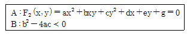
- 원
- 타원
- 포물선
- 쌍곡선
(정답률: 36%)
67. 다음 용어 설명 중 틀린 것은?
- 비트(bit) : 정보를 기억하는 최소 단위
- 바이트(byte) : 8비트 길이를 가지는 정보의 단위
- 파일(file) : 셀(cell)의 집합
- 블록(block) : 레코드(record)들의 집합
(정답률: 56%)
68. 8비트 ASCⅡ 코드는 몇 개의 패리티비트를 사용하는가?
- 1개
- 2개
- 3개
- 4개
(정답률: 54%)
69. 중앙처리장치와 상대적으로 느린 주기억장치 사이에서 발생하는 데이터 접근속도를 완충하기 위해 사용하는 고속의 기억장치는?
- main memory
- cache memory
- read only memory
- flash memory
(정답률: 76%)
70. CAD에서 레이어(layer)에 대한 설명으로 맞는 것은?
- 도면에서만 사용할 수 있는 사용자 정의 주석
- 어느 일부분을 확대하여 작업할 때 사용하는 명령어로 사각형은 대각되는 두 점을 입력하여야 함
- 사용자의 입력을 돕기 위한 팝업 형태의 모든 창
- 도면을 몇 개의 층으로 나누어 관리하는 방식으로 각 층별로 요소의 작성 및 편집들이 가능한 것
(정답률: 72%)
71. 솔리드 모델링 기법 중 CSG(constructive solid geometry)방법에 의한 형상 작업을 할 경우 기본적인 불리언 연산(Boolean operation)작업에 해당하지 않는 것은?
- 더하기(union)
- 빼기(difference)
- 곱하기(multiplication)
- 교차(intersection)
(정답률: 61%)
72. CAD 소프트웨어와 가장 관계가 먼 것은?
- AutoCAD
- EXCEL
- Solid Works
- CATIA
(정답률: 84%)
73. 서로 다른 CAD/CAM 시스템 사이에서 데이터를 상호교환하기 위한 데이터 교환 표준에 해당하지 않는 것은?
- IGES
- STEP
- DXF
- DWG
(정답률: 76%)
74. 2차원 평면에서 다음과 같은 관계식으로 이루어진 직선과 평행한 직선이 아닌 것은?
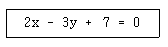
- 3x-5y+9=0
- y=2/3x+1
- 4x-6y+5=0
- 9y-6x+11=0
(정답률: 45%)
75. CAD 용어 중 점, 선, 아크, 곡면 등 3차원 CAD시스템의 입력의 최소 단위를 나타내는 용어는?
- 엔티티(entity)
- 파일(file)
- 객체(object)
- 경계(boundary)
(정답률: 52%)
76. 다음과 같은 2차원 동차좌표 변환행렬이 수행하는 변환은?
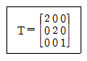
- 이동
- 회전
- 확대
- 대칭
(정답률: 54%)
77. 그림과 같은 꽃병 도형을 그리기에 가장 적합한 방법은?
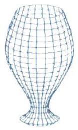
- 오프셋 곡면
- 원추 곡면
- 회전 곡면
- 필렛 곡면
(정답률: 80%)
78. 행렬
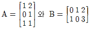
의 곱 AB는?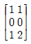
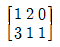
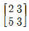
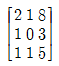
(정답률: 68%)
79. 지정된 모든 점을 통과하면서 부드럽게 연결이 필요한 자동차나 항공기 같은 자유곡선이나 곡면을 설계할 때 부드럽게 곡선을 그리기 위하여 사용되는 것은?
- 베지어 곡선
- 스플라인 곡선
- B-스플라인 곡선
- NURBS 곡선
(정답률: 64%)
80. 3차원 형상의 솔리드 모델링 방법에서 CSG방식과 B-Rep방식을 비교한 설명 중 틀린 것은?
- B-Rep방식은 CSG방식에 비해 보다 복잡한 형상의물체(비행기 동체 등)를 모델링하는데 유리하다.
- B-Rep방식은 CSG방식에 비해 3면도, 투시도 작성이 용이하다.
- B-Rep방식은 CSG방식에 비해 필요한 메모리의 양이 적다.
- B-Rep방식은 CSG방식에 비해 표면적 계산이 용이하다.
(정답률: 62%)